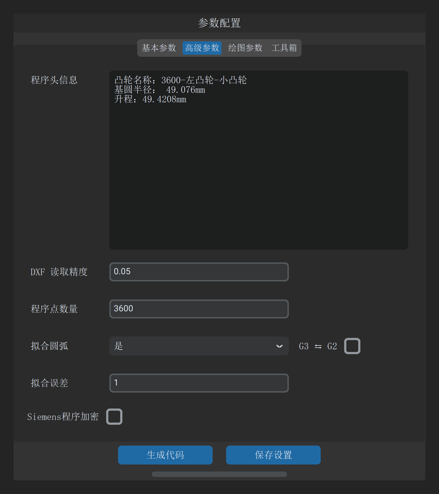

2.3 高级参数与算法配置
一句话说明：配置程序头注释信息、轮廓采样精度、圆弧拟合逼近误差、圆弧插补方向反转及西门子程序加密保护。

高级参数速查表
| 参数名称 | 默认值 / 单位 | 校验范围 | 作用与工程设置要点 |
|---|---|---|---|
程序头信息 |
多行文本 | 字符串 | 写入 CNC 程序顶部的注释说明。系统自动在每行开头追加分号（;），可用于记录工件编号、工艺要求、编程者及时间。 |
DXF 读取精度 |
0.01 mm |
mm | 读取 DXF 样条/线段时的离散步长。数值越小，离散点密度越高。精密凸轮推荐设为 0.005 mm。若输入 ，系统将报错拦截。 |
程序点数量 |
3600 |
正整数 | 离散点插补模式下，工件旋转一圈生成的等距程序点总数。通常设为 3600（即平均每 一个插补点）。 |
拟合圆弧 |
否 |
否 / 是 |
是否将离散轮廓转换为连续相切圆弧插补段（西门子 TRANSMIT 模式）。选 是 可极大缩小程序体积并提升工件光洁度。 |
G3 ⇆ G2(拟合圆弧右侧复选框) |
关 (0) | 开 / 关 | 圆弧插补代码方向反向切换。 默认顺时针走向输出 。某些磨床的坐标轴定义中，砂轮架运动正方向与常规机床相反，勾选后将自动对调生成的 与 指令。 |
拟合误差 |
1 |
正数 | 圆弧拟合最大允许偏差。 单位换算：实际最大允许误差为 mm。即输入 1 代表允许最大弓高误差为 （）。设置越小精度越高，但拟合圆弧段数会相应增多。 |
Siemens程序加密 |
关 (0) | 开 / 关 | 对生成的西门子 .SPF 程序调用 pt.dat 执行底层加密，生成机床端受保护程序，防止现场工艺代码泄露。 |
关键算法机制说明
[!NOTE] “程序点数量”与“拟合圆弧”的联动机制
- 当
拟合圆弧选择否时，CNC 程序段严格由程序点数量决定（输出对应数量的 离散点）。- 当
拟合圆弧选择是时，底层圆弧拟合引擎自动采用固定 3600 个基准离散点进行高精度双圆弧平滑逼近，最终输出的圆弧段数由拟合误差动态收敛决定。[!TIP] 拟合误差经验推荐值
- 一般凸轮（公差 ）：
拟合误差填入10（即允许 误差），圆弧段数通常在 20~40 段。- 精密凸轮（公差 ）：
拟合误差填入1（即允许 误差），拟合轮廓与理论轮廓完全重合。